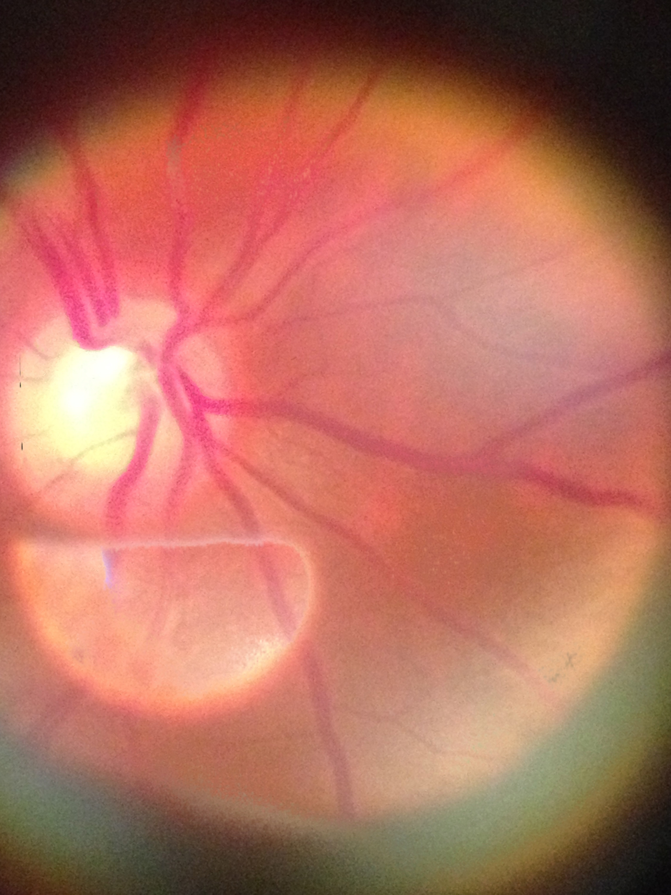

Input 1 (Glare Washed) Restored CompositeRetinal Glare Restoration & Multi-Perspective Panorama Engine

Input 1 (Glare Washed) Restored CompositeComputes SIFT/SURF keypoints across simulated tilts and rotations (ASIFT) to guarantee convergence under oblique clinical camera angles.
Evaluates image entropy, sharpness, and spatial keypoint density to automatically anchor the global coordinate reference frame.
Rejects ambiguous matching pairs by enforcing distance ratio checks (< 0.75) against second-nearest neighbors in FLANN k-d trees.
Calculates robust 3x3 homography matrix while pruning geometric outliers, checking quadrilateral rectangularity (> 0.50).
Segments overexposed corneal reflections via morphological filters and adaptive thresholding (get_bright_alpha).
Fuses non-saturated vascular details from secondary exposures into the base image with seamless boundary transitions.
Applies realistic aperture circular boundary (simulateLens) and optional bilateral filtering for clinical presentation.